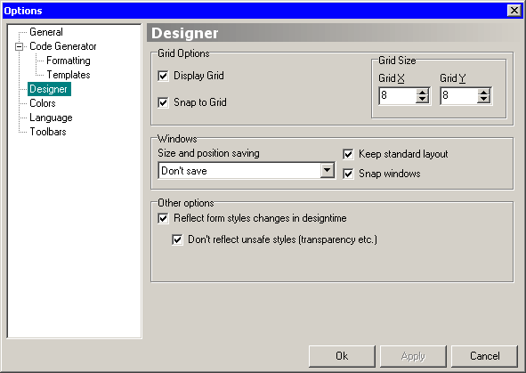

Show grid on the form designer canvas.
When a control is created, it will be automatically aligned to the closest grid “line”.
Horizontal and vertical grid sizes. Default is 8 x 8 pixels.
Options for saving designer windows size and position. This can be:
When moving windows, Koda will still maintain its standard layout.
Property inspector, object tree and form list windows will snap to main form and to each other.
In this mode, changes in form styles will immediately visible at canvas, without need of refreshing.
Setting some styles can mess with your form, and you won't be able to return its previous state until form reloading. This option is on by default and it is the recommended setting. Change it at your own risk.
When this option enabled, tree will be always expand when changed (like in earlier Koda versions).